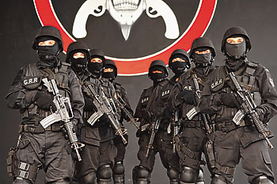
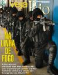

A revista Veja saiu esta semana com uma reportagem sobre o BOPE da Polícia Militar do Rio de Janeiro, e estampou os homens de preto na capa. Uma boa matéria que estimula o brio dos guerreiros que servem naquele Batalhão Especial, e de alguma maneira a reportagem se mostra imparcial, não tendendo a retratar a tropa de elite da PM como um bando de soldados violentos como outras mídias televisivas e impressas insistem em fazer.Certas coisas que se faz durante operações, principalmente com o uso do veículo blindado, são justamente para preparar um início de confronto menos letal, abalando emocionalmente candidatos que teimem em enfrentar os bem preparados policiais. É para meter medo mesmo, intimidar. Corra vagabundo que a Polícia está entrando!!
A reportagem narra ainda o trágico incidente que resultou na morte de um servidor do BOPE logo no início da ocupação da Vila Cruzeiro, no Complexo do Alemão na Penha. O PM da tropa de elite foi fatalmente ferido por um disparo certeiro e a longa distância. Há boatos circulando pelos comandos da PM que o autor do disparo que matou o militar do BOPE tenha sido feito por um ex-PM que servia no BOPE e foi expulso após o cometimento de crimes. Ele estaria agora aliado aos traficantes locais, e com seu treinamento representaria um enorme risco às vidas dos policiais que tentam retomar a favela ao controle do Estado.
{kind=link}
O GRR (Grupo de Resgate e Retomada) também é mencionado, composto de policiais que treinam situações de resgate de reféns e outras atividades afins, contando inclusive com o apoio de atiradores sniper, que podem abater à distância um elemento que represente risco ao refém por exemplo.
Também é citado o vergonhoso salário de um soldado do BOPE: R$ 1.200,00 . Mil e duzentos reais de salário para um policial que se dedica a exaustivos treinamentos, é especialista no que faz, integra a melhor tropa de combate urbano do mundo e arrisca sua vida em cansativos plantões, sucessivamente.
Alguns detalhes do treinamento de Caveira do BOPE também são citados no artigo, porém sabemos que o buraco é bem mais em baixo, os caras passam por situações complicadas para conseguirem completar o curso. Mas deve valer a pena, afinal, não é a toa a performance do grupo durante as incursões em áreas de alto risco.
Parabéns guerreiros do BOPE, esperamos que o Governo um dia reconheça a importância de uma Polícia bem preparada, uma para investigar e outra para agir com precisão em combate, e que a dignidade dos servidores seja resgatada.
Aproveitando, segue um vídeo do BOPE junto com o COT (da Polícia Federal) que irão atuar intensamente durante os jogos do Pan no Rio (e algo me diz que eles terão muito trabalho). E também, como a reportagem cita o filme que será lançado, lembremos que o assunto não é novidade pra gente, já que o Alexandre de Souza do Diario de um PM adiantou tudinho neste post aqui. Divirtam-se
[youtube NdRGSeGvYCk]